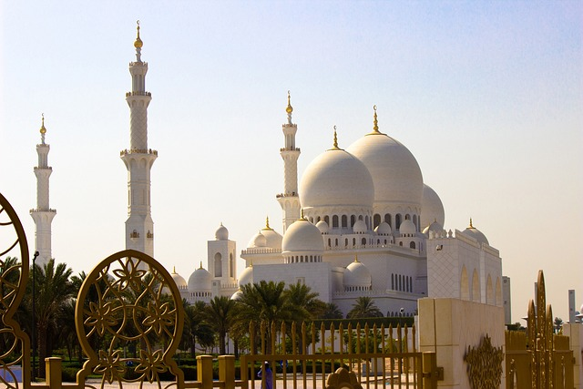

CENTRAL MOSQUE
.webp)
Found since 1950's
My home towm is a small settlement located in a rural setting. It is generally larger than a "hamlet" but smaller than a "town." Some geographers specifically define my home town as having between 500 and 2,500 inhabitants. Some villages are linear settlements. They are not clustered around a central public space, but around a line. This line can be natural, such as a river bank or seashore. (Fishing village s are often linear settlements.) Linear settlements can also develop around a transportation route, such as a railroad line. Planned villages are communities that do not develop around a central point. They are outlined by city planners, often to avoid land-use conflicts that are common in nucleated settlements. Planned villages are sometimes called "new towns." Tapiola, Finland, for instance, was planned as an "ecological village" or "garden city" in the 1950s. The nonprofit organizations that planned Tapiola were guided by the principles of providing local jobs, including all income levels, and establishing life in harmony with nature and the natural world. Villages often function as units of local government. In China and Japan, a village is an official administrative unit. An administrative unit is a single component of government, with its own leadership (similar to city councils) and services, such as mail delivery. Villages in the Past
Brief History of Doko The origin of the people has not been clearly documented. However oral evidence has provided an insight into the historical beginnings of the Doko people. From oral tradition, it is indicated that Hama Kolo was the first man who was said to have settled at Sakoba. This is the place the Doko people as known today settled first. The people at Sokoba were known as Edoko, meaning plenty. Hama Kolo was said to have come from the East with a Chieftaincy titles known as Defian and Zhitsu . The Hama Kolo also had a son called Saba. A time came when the Fulanis took away this Saba as a slave to Raba ( a village far away beyond River Kaduna) to cut grasses as fodder for their horses. Later Saba escaped from Raba and came to his father Hama Kolo at Sakoba. On his way coming, Saba came along with the sickle which he used in cutting grass for the Fulani horses. On his arrival he was asked what he was doing at Raba with the sickle. Saba then informed the father that he was cutting grass for the Fulani horses and that in Nupe language is ego doko-gbe . This work of Saba then later became the name of the settlement hence Doko having his name. The descendants of Saba and his father are still known in Doko today as Edoko and still maintained the titles of Defian and Zhitsu! Dazhi, another group of people who lived in Doko, were two brothers who came from beyond the river, from a place called Gara ( a village beyond river Kaduna), possibly from Benue State. They came to a place now called Kopa (Kopa is about five kilometers from Doko, on the other side of the hill on the slope of which Doko is situated). There was nothing in this place except bush. They settled there, first as hunters and later they began to work on the land. After two years the younger brother called Lafiya left Kopa and came down to the hill to a place called Kokogi about two kilometers away from Edoko people. Lefiya came with a title of Etsu Dazhi, meaning Chief of Dazhi people. Lefiya became the first Etsu Dazhi of the people in Doko. To escape from the Fulani raiders, Edoko people moved from Sakoba into the hillside where Dazhi people had settled. The Dazhi people claimed that the land where Edoko people came to settle in was theirs. This episode later made the Edoko people to surrender their sovereignty to Dazhi people, politically. Today, the Dazhi people owned the land, economic trees and the fish ponds. This is why in Doko today we have Dazhi as the political head of the village. The other group that formed the Doko people apart from the one mention above are : Takogi, Kpacinninfugi and Dodofugi people. Geography of Doko Doko is located on latitude 8 N and longitude 5 E. It is a district in Lavun Local Government of Niger State. Doko is about fifteen kilometers away from Bida, sharing boundary with Bida in the North and Kwara State in the East. Doko is one of the Beni organizations, a sub-tribe in Nupe Kingdom. From the foot of the two flat-topped hills, the town sweeps down into the plains. The land is undulating, rugged, and dotted here and there with fold ridges. Due to its undulating land there are big river valleys which run through the village from the two flat-topped hills of the Plateau. This accounts for Doko been situated on some water course, a stream or a brook called Danangi,Bokungi , and Santu . Here, women fetch water, wash their clothes, calabashes and dishes. This is common during dry season when almost all the wells have dried up in the town. Doko, being part of Nupe country, has combinations of features from the South and North of Nigeria. Nupe, lying lower than any of the districts in Nigeria with its two big rivers, their dry, blazing sand bank in the dry season.
1 Etsu Dazhi Chief Ward Hereditary
2 Shaba Assistant Ward Not Hereditary
3 Lile Councillor Ward Presumptive
4 Kpotun Councillor Ward Presumptive
5 Makun Councillor Ward Presumptive
6 Defian Councillor Defianfu Hereditary in one
house
7 Dzoko Councillor Takogi Hereditary in one
house
8 Gboko Councillor Kpachinifugi Hereditary in one
house
9 Gbodo Councillor Dazhi Hereditary in one house
10 Zhitsu Bebi Councillor Edoko Hereditary in one
house
11 Majin Egbe Head of Hunters Edoko Hereditary
in one house
12 Dzoko Gbwadua Councillor Konufu Hereditary in one house
\
13 Majin Tswaci Head of Blacksmiths
Tswata
Hereditary in one house
14 Etsu Dzuko Chief of the Market Any House
Presumptive
15 Sagi Head of Women Any House Presumptive
16 Ninwoye Assistant Any House Presumptive
17 Soninya Head of Strangers Any House
Presumptive.